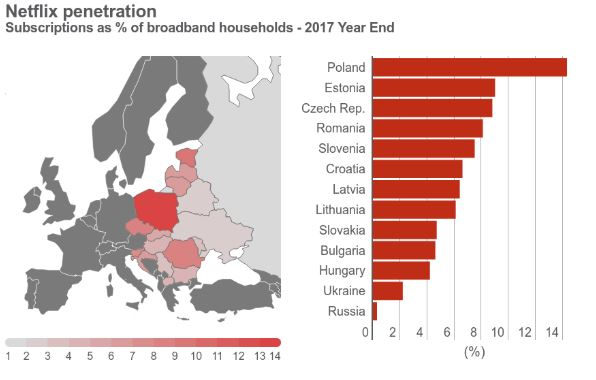

29 Января, 2018 16:10
В январе исполнилось два года с тех пор, как в Украине официально заработала американская стриминговая платформа Netflix. По разным данным, за два года пользователями сервиса стали от 40 000 до 100 000 украинцев. ;
Консалтинговая компания IHS Markit в декабре 2017 года опубликовала отчет, где привела статистику использования платформы в странах Центральной и Восточной Европы. Украина оказалась на предпоследнем месте с показателям в 2% от общего числа домохозяйств с доступом к широкополосному интернету, которые подписаны на Netflix. Как подсчитало издание Liga.net, это число эквивалентно более 100 000 абонентам.
Еще одно исследование подготовила компания Nakono, оно менее оптимистичное: “по состоянию на 2017 год количество подписчиков Netflix в Украине составляет почти 43 000 человек ”. Компания прогнозирует, что к 2020 году этот показатель увеличится до 258 000. На исследование обратило внимание издание Na Chasi.
| № | Страна | Население | Флаг | Ссылка на Wiki |
|---|---|---|---|---|
| 1 | КНР | 1 392 254 000 | Wiki | |
| 2 | Индия | 1 353 656 000 | Wiki | |
| 3 | США | 330 604 442 | Wiki | |
| 4 | Индонезия | 268 427 660 |
|
Wiki |
Нумерованный список внутри которого маркированный